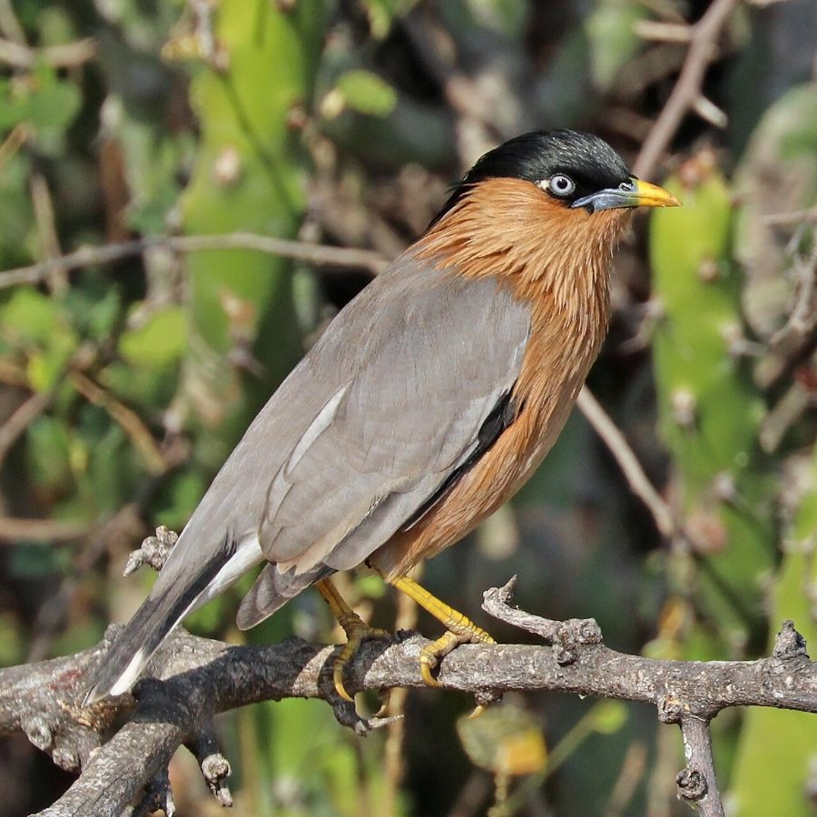

ब्राह्मणी मैनाBrahminy Starling
Sturnia pagodarum · Sturnidae · BRD-0064

- Scientific name
- Sturnia pagodarum (Gmelin, 1789)
- Family
- Sturnidae
- Hindi
- ब्राह्मणी मैना
- Status here
- native
- IUCN
- LC
When to look कब देखें
Present all year.
ब्राह्मणी मैना / Brahminy Starling
Sturnia pagodarum (Gmelin, 1789) — Sturnidae
ब्राह्मणी मैना (ब्राह्मिणी मैना / पुगवी) — पूर्वी उत्तर प्रदेश के सूखे खुले जंगलों, ग्रामीण क्षेत्रों के बाग-बगीचों और कृषि मैदानों में पाया जाने वाला एक अत्यंत सुंदर, आकर्षक और चटकीले रंगों वाला पक्षी (starling/myna) है। इसकी सबसे बड़ी पहचान इसका हल्का मटमैला-धूसर (pale grey) शरीर, सिर पर मौजूद चमकदार काले रंग की लंबी कलगी (long drooping black crest), और छाती तथा पेट का सिंदूरी-कत्थई (chestnut) रंग है। इसकी चोंच का आधार चमकीला नीला और सिरा नारंगी-पीला (orange-yellow bill with a blue base) होता है। यह एक सर्वभक्षी (omnivore) पक्षी है जो कीड़ों-मकोड़ों को खाने के साथ-साथ फूलों के मकरंद (nectar-drinker) और छोटे फलों को भी बड़े चाव से खाता है। यह फूलों का रस पीते समय परागण (pollination) और बीज प्रसार (seed dispersal) में महत्वपूर्ण भूमिका निभाता है।
Quick Identification त्वरित पहचान
| Feature | Description |
|---|---|
| Size | Small, slender starling (19–21 cm total length); slightly smaller than the Common Myna |
| Head & Crest | Glossy black crown and a long, drooping crest that lies flat along the back of the neck |
| Colouration | Pale grey upperparts; rich orange-rufous or chestnut underparts and cheeks |
| Bill | Yellow with a conspicuous greenish-blue base |
| Flight | Swift, direct flight with rapid wingbeats; wings show no white patches (unlike Common Myna) |
| Tail | Dark brown tail with broad white tips on the outer tail feathers, visible in flight |
Field tip: Look in village orchards or flowering trees like the Indian Coral Tree or Semal. Watch for a pale grey bird with a black crest and rich chestnut underparts feeding on nectar. Their yellow-and-blue bill is visible up close. The female resembles the male but has a shorter crest and is shown in the field tip.
Morphology आकारिकी
Biometrics (typical measurements in the northern Indian plains):
| Measurement | Range |
|---|---|
| Total length | 190–210 mm |
| Wing (flattened chord) | 100–115 mm |
| Tail | 60–75 mm |
| Tarsus | 28–32 mm |
| Bill (culmen from base) | 16–19 mm |
| Weight | 35–50 g |
Plumage: The upperparts from the mantle to the rump are pale grey. The head is glossy black, with long, loose feathers forming a drooping crest that can be raised when excited. The sides of the head, throat, breast, and upper belly are rich rufous-chestnut. The flanks are grey, and the lower belly and undertail coverts are white. The primary wing feathers are dark grey-brown. The tail is blackish-brown, with white outer margins and tips.
Bare parts: The bill is bright yellow, with a pale blue-green base on both mandibles. The irises are pale yellow or whitish. The legs and feet are bright yellow.
Vocalisations
Brahminy Starlings are musical, producing a variety of chattering and whistling calls, often mimicking other birds.
- Song: A sweet, bubbling series of whistles, squeaks, and gurgles, churr-churr-chee-chee, delivered from a high branch.
- Alarm call: A harsh, nasal chattering screech, tshrr-tshrr, produced when disturbed or during nest defence against crows.
Behaviour & Ecology व्यवहार और पारिस्थितिकी
- Omnivorous diet: Forages on the ground in pastures for insects, but spends much of its time in fruiting and flowering trees. It feeds on nectar from flowers such as the Indian Coral Tree (Erythrina variegata) and Semal (Bombax ceiba), dusting its forehead with pollen.
- Pollination niche: As it moves from flower to flower drinking nectar, it transfers pollen on its head, acting as a major pollinator for native trees.
- Roosting: Forms small flocks outside the breeding season, often roosting in thorny bushes or bamboo clumps near villages.
Life Cycle / Phenology जीवन चक्र
- Breeding season: May to August in northern India, coinciding with the monsoon pre-emergy of insects.
- Nesting: Relies on tree hollows or holes in walls. They line the cavity with dry grass, feathers, and leaves.
- Nest site: Built in natural cavities of old trees, abandoned woodpecker holes, or gaps in brick walls of village houses.
- Clutch size: 3 to 4 pale blue or greenish-blue eggs.
- Incubation: 12–14 days, shared by both parents.
- Fledging: Both parents feed the nestlings on caterpillars and insects. The young fledge in about 18–21 days.
Host Plants or Prey आहार
Primary food items:
- Nectar & Fruits: Nectar of Indian Coral Tree, Semal, and Night Jasmine (Nyctanthes arbor-tristis); fruits of Banyan, Peepal, and Neem.
- Insects: Grasshoppers, crickets, termites, caterpillars, and beetles captured from tree bark or ground.
Predators / Natural Enemies शत्रु
- Raptors: Shikras (Accipiter badius) and small falcons are primary aerial predators.
- Corvids: House Crows (Corvus splendens) raid nesting cavities, trying to pull out eggs or chicks.
- Reptiles: Garden lizards and tree snakes raid nesting cavities.
Agricultural / Human Relevance कृषि प्रासंगिकता
Pollinator and seed disperser. By feeding on fruits and nectar, the Brahminy Starling helps pollinate economically important trees and disperse seeds. It also controls grasshoppers and crop pests in agricultural fields.
Conservation and legal status: Protected under Schedule IV of the Wildlife Protection Act, 1972. They are generally secure due to their tolerance of human-altered habitats, but are threatened by the loss of old trees with nesting cavities and pesticide usage which reduces insect food.
Expected Locally स्थानीय रूप से अपेक्षित
Not a field record. Written from published accounts for eastern Uttar Pradesh. No confirmed local sighting yet — if you have seen it, that is what the atlas needs.
अभी तक स्थानीय पुष्टि नहीं। यह विवरण प्रकाशित स्रोतों से है, किसी अवलोकन से नहीं।
A common resident throughout the Basti district. They are regularly observed in village orchards, gardens, and flowering trees near crop margins in the Harraiya and Vikramjot blocks. They are particularly active during the spring flowering of Semal and Coral trees.
Distribution वितरण
Global range: Endemic to the Indian Subcontinent (India, Pakistan, Nepal, Bangladesh, Sri Lanka).
In India: Widespread resident throughout the plains and foothills, up to 1,500 metres in the Himalayas.
In Uttar Pradesh: A common resident state-wide in all agricultural and wooded plains.
In Basti district / eastern UP: Regularly recorded year-round in rural groves and village fringes in all blocks.
Research Questions शोध प्रश्न
Anyone can investigate these | कोई भी इन प्रश्नों की जाँच कर सकता है
- How many species of flowering trees does a Brahminy Starling visit for nectar in a single morning in Basti? — Observe and record feeding visits in village commons.
- What is the preference of Brahminy Starlings for nesting in old brick walls versus natural tree cavities? / ब्राह्मणी मैना बस्ती में पुराने घरों की दीवारों के छिद्रों और पेड़ों के कोटरों में से किसमें घोंसला बनाना अधिक पसंद करती है? — Locate and map active nests.
- Do Brahminy Starlings mimic the calls of other birds like the Black Drongo in their songs? — Record and analyze audio clips of singing starlings.
- How do Brahminy Starlings and Common Mynas interact when competing for a nesting cavity? — Document nesting territory defenses.
- Does the sighting frequency of Brahminy Starlings in agricultural fields change after harvesting? / क्या फसल कटाई के बाद कृषि क्षेत्रों में ब्राह्मणी मैना के दिखने की आवृत्ति बढ़ जाती है? — Conduct strip counts.
Similar Species मिलती-जुलती प्रजातियाँ
| Species | How to tell apart | हिंदी |
|---|---|---|
| Asian Pied Starling (Gracupica contra) | Bold black-and-white plumage; orange orbital skin around the eye; lacks crest | अबलकी मैना — सफ़ेद और काला शरीर, आँख के पास नारंगी त्वचा |
| Common Myna (Acridotheres tristis) | Larger; dark brown body; yellow skin behind the eye; bold white wing patches visible in flight | देसी मैना — बड़ा आकार, आँख के पीछे पीली त्वचा, सफ़ेद पंख के धब्बे |
| Rosy Starling (Pastor roseus) | Much larger; rose-pink body; glossy black head, wings, and tail; winter migrant in large flocks | गुलाबी मैना — गुलाबी शरीर, बड़े झुंड, सर्दियों का प्रवासी |
Field rule: Small starling with pale grey upperparts, rich orange-chestnut underparts, a long drooping black crest, and a yellow-and-blue bill is a Brahminy Starling.
Taxonomy & Classification वर्गीकरण
Original description. Johann Friedrich Gmelin described the Brahminy Starling as Turdus pagodarum in 1789 in his Systema Naturae (ed. 13, vol. 1, part 2, p. 816). The type locality was Malabar, India. The genus name Sturnia is a Neo-Latin name derived from Sturnus (starling). The specific name pagodarum refers to pagodas or temples, referencing the bird's habit of roosting on temple roofs in India.
Subspecies. Monotypic — no subspecies are currently recognised.
Family and order placement. Placed in the order Passeriformes, family Sturnidae (starlings and mynas).
Phylogenetic notes. Genetic data shows that Sturnia pagodarum belongs to a distinct lineage of Asian starlings, closely related to the Chestnut-tailed Starling (Sturnia malabarica).
IUCN status rationale. Listed as Least Concern (LC) due to its large range and stable population, showing high tolerance to agricultural landscapes and human settlements.
Photo Gallery फोटो गैलरी
References संदर्भ
- Gmelin, J. F. (1789). Systema Naturae. Volume 1, Part 2. Lipsiae, p. 816. [original description]
- Ali, S. & Ripley, S. D. (1999). Handbook of the Birds of India and Pakistan. Vol. 5. Oxford University Press, New Delhi.
- Grimmett, R., Inskipp, C. & Inskipp, T. (2011). Birds of the Indian Subcontinent. 2nd ed. Christopher Helm, London.
- Feare, C. & Craig, A. (1998). Starlings and Mynas. Christopher Helm, London.
- BirdLife International (2024). Sturnia pagodarum. IUCN Red List of Threatened Species. Ver. 2024.
- GBIF Occurrence Data — Sturnia pagodarum, Uttar Pradesh (2010–2025).
Source file: species/fauna/birds/brahminy_starling.md